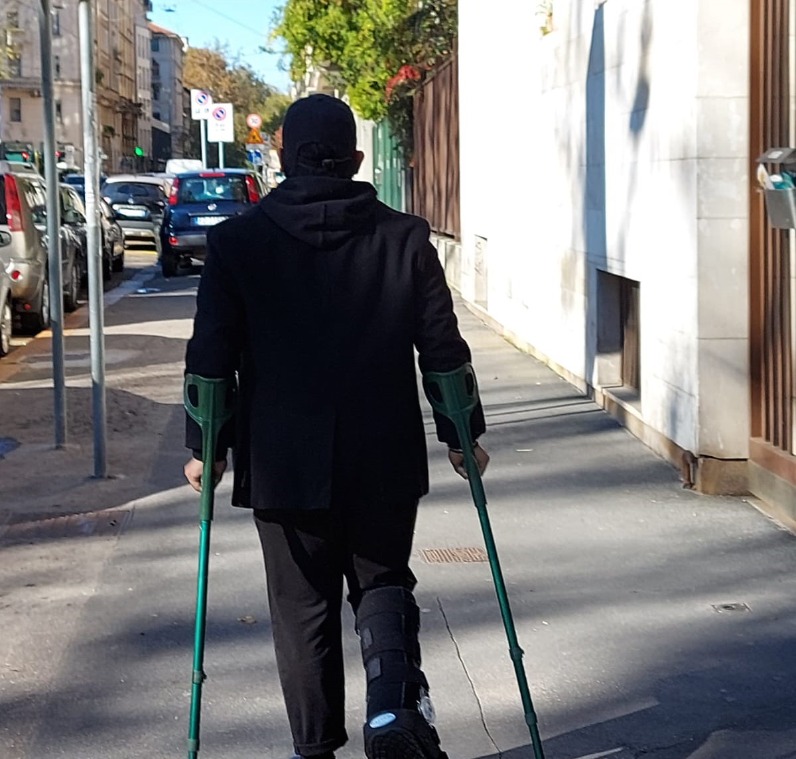
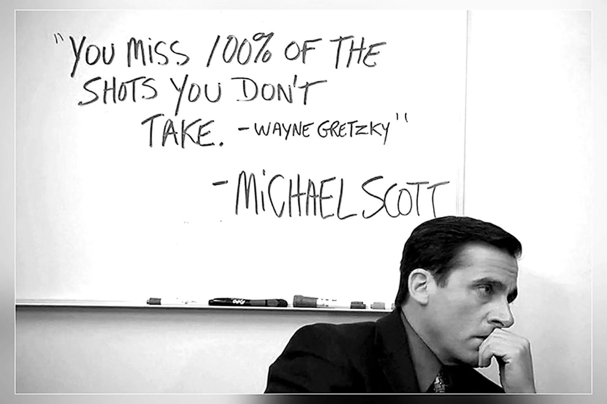

THE MOUNTAINS
Explore


A blessing in disguise
The mountains always evoke a sense of serenity and calm for me,
from the crisp air to the deep connection with nature. However,
after a trekking accident that resulted in a broken leg, my perspective on mountains changed. They now symbolize change for me -
from the varying scenery depending on the season, to the transformation in my own life. The accident gave me time to reflect on what I truly wanted to do with my life and that's when I discovered my passion for coding and web development.
I had briefly learned about it in high school but never truly appreciated it until I had the opportunity to explore it on my own. The sense of accomplishment from creating something from scratch was exhilarating and I fell in love with it.
My goal now, as an aspiring web developer, is to continue to improve and grow. Thank you for taking the time to view my work, which is a of my self-study and experimentation.

A quote for inspiration
This quote is from the character Michael Scott, portrayed by actor Steve Carell in the TV series "The Office," this qoute might be perceived as silly by fans of the show, but I find it to be a profound statement. As an avid basketball enthusiast, I am aware of the significance of shooting percentage, which measures the likelihood of a player making a shot. Some players are so concerned about maintaining a high shooting percentage that they avoid taking shots altogether. In my view, this quote underscores the idea that if you spend too much time weighing the risks of a decision, you may miss out on valuable opportunities. To put it differently, if you don't take risks, you'll always come up short.
final remarks
"I hope you have enjoyed browsing through my website and that it has given you a glimpse of my skills and abilities as a web developer.
Additionally, I hope that you have gotten a sense of who I am as a person and what I can offer to your company.
As a final thank you for your time spent here, I would like to share one of my all-time favorite quotes from a book that I highly recommend.
This quote has been a source of inspiration for me throughout my journey and I hope it will inspire or help you in some way.
The quote is: "And once the storm is over, you won't remember how you made it through, how you managed to survive. You won't even be sure, whether the storm is really over.
But one thing is certain. When you come out of the storm, you won't be the same person who walked in.---Kafka on the Shore
Novel by Haruki Murakami
"